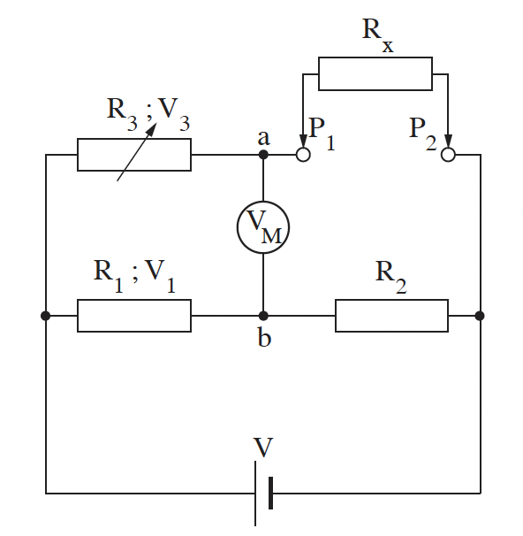

שאלה 3

בתרשים שלפניכם מוצג מעגל חשמלי שבעזרתו אפשר למדוד התנגדות לא ידועה של נגד Rx. המעגל מורכב מן המרכיבים האלה:
- - שני נגדים בעלי התנגדות קבועה R1 ו-R2
- - נגד משתנה R3
- - מקור מתח V שהתנגדותו הפנימית זניחה
- - מד מתח אידיאלי VM.
לצורך מדידת ההתנגדות של Rx מחברים אותו בין הנקודות P1 ו-P2, ומשנים את ההתנגדות של הנגד המשתנה R3 עד שמד המתח מורה אפס.
הוכיחו שכאשר מד המתח מורה אפס, הביטוי V3 = V ( R3R3 + Rx ) מתאר את המתח V3 על הנגד R3. (7.33 נקודות)
הוכיחו שכאשר מד המתח מורה אפס, אפשר לחשב את Rx בעזרת הביטוי Rx = R2R1 · R3. (10 נקודות)
נתון: R1 = 30kΩ, R2 = 10kΩ, Rx = 2kΩ.
חשבו את ההתנגדות של R3. (5 נקודות)
| התנגדות הרכיב כתלות בטמפרטורה | |
|---|---|
| הטמפרטורה (°C) |
התנגדות (Ω) |
| 0 | 32,660 |
| 5 | 25,400 |
| 10 | 19,900 |
| 15 | 15,710 |
| 20 | 12,500 |
| 25 | 10,000 |
| 30 | 8,000 |
| 35 | 6,500 |
| 40 | 5,300 |
החליפו את הנגד Rx ברכיב אחר, שהתנגדותו לא ידועה. התנגדותו של הרכיב משתנה כתלות בטמפרטורה, לפי הנתונים שבטבלה שלפניכם.
היעזרו בנתונים שבטבלה והעריכו את הטמפרטורה של הרכיב כאשר מד המתח מורה אפס, בכל אחד משני המצבים (1) - (2).
(1) R3 = 30kΩ (5 נקודות)
(2) R3 = 54kΩ (5 נקודות)